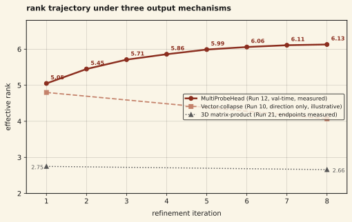

We report a direction-reversal in the rank trajectory of matrix-valued token representations across three configurations that share the Matrix Thinker backbone but vary in how predictions are produced. Under a bilinear MultiProbeHead, effective rank rises monotonically across 8 refinement iterations (5.05 → 6.13) and the model reaches T=8 BPB 1.67. Under a vector-collapse output head, rank falls during iteration. Under 3D matrix-product attention, rank falls (2.75 → 2.66) and T=8 BPB is 2.457. The three runs are not FLOPs-matched: they differ in training corpus, step count, and — for the 3D matrix-product run — in attention mechanism as well as read-out. We describe them together because the direction of the rank trajectory is the cleanest signal we can extract; the BPB numbers are weaker evidence. Our working interpretation is that the output mechanism shapes the gradient signal reaching the backbone, and that bilinear probes reward holding linearly independent rank-1 components while the two controls reward concentration. This is observational, single-seed, and at 5.16M-parameter scale. We report it as a reproducible single-run finding that motivates a causal rank-projection ablation, not as a general phenomenon or a causal claim.
01Background
The literature on depth dynamics in transformers treats rank as a property of the backbone. Dong et al. 2021 showed that pure self-attention loses rank doubly exponentially with depth, and a sequence of follow-up papers attributes the mitigating effect to residual connections, MLP blocks, and layer norm. The implicit assumption is that the output head is a thin read-out layer whose gradient shape does not meaningfully alter the internal dynamics of the stack below it.
That assumption is load-bearing for how the field reasons about representation collapse. If the output head can reverse the direction of rank change — not just change a quality metric but flip the sign of a structural trajectory — then "depth drives collapse" is a statement about a particular training incentive rather than an architectural inevitability. We report the sign flip.
Matrix-valued token representations make this question sharp. A matrix admits a well-defined rank per token per iteration, so we can watch the trajectory of structural complexity during a single forward pass without having to estimate it across an ensemble. The effective rank (exponential of singular value entropy) is continuous, differentiable, and bounded in [1, d]. For d = 32, it gives us roughly five bits of resolution on how many linearly independent directions the matrix is carrying at each step.
The prior rank-enrichment note (finding 01) reported that rank rises during iterative refinement under a bilinear output head. This note varies the output mechanism across three runs that share the Matrix Thinker backbone, and observes that the sign of the rank trajectory tracks the output mechanism across those runs. Because the runs also differ in other respects (training corpus, step count, attention mechanism for one of the three), this is an observational association rather than a controlled test, and we are careful below to mark which comparisons are clean and which are not.
02Setup
Shared backbone
All three runs use the Matrix Thinker architecture — iterative refinement that applies a shared thinking block T = 8 times to every position with gradient checkpointing, with two sub-layers per block: matrix attention with Q, K, V projected through RowThenCol projections, and a multiplicative update Mnew = (I + Δ) · M · (I + Γ), where Δ and Γ are data-dependent SwiGLU-activated RowThenCol projections scaled by a learned scalar in [0.01, 0.5]. The matrix dimension and layer count vary across runs: the MultiProbeHead run (Run 12) uses d = 32 with 8 layers, the 3D matrix-product run (Run 21) uses d = 16 with 12 layers, and the vector-collapse run (Run 10) is the older Round 1 configuration. The shared element across the three runs is the iterative-refinement structure and the multiplicative thinking block, not the matrix dimension or the layer count.
The three output mechanisms
We compared three configurations. All three use the same Matrix Thinker backbone and update rule. The MultiProbeHead and 3D matrix-product runs share the OpenR1-Math training corpus and the Round 2 optimizer settings; they differ from each other in step count (3000 vs 1000) and in attention mechanism (Frobenius vs 3D matrix-product). The vector-collapse run is the older Round 1 configuration on WikiText-103 with different training settings. The cross-run comparisons are therefore not on a single held-everything-else-fixed axis; see Limitations for the unmatched dimensions.
- MultiProbeHead (bilinear probes). K = 32 pairs of probe vectors (uk, vk). The probe value is pk = uk⊤ M vk, computed over all positions via einsum. Probes are projected to vocab via Linear(K, vocab). The per-class effective scoring matrix is Weff[w] = Σk out[w, k] · uk vk⊤, a sum of K rank-1 matrices. At K ≥ d, any d × d per-class scoring matrix is representable. Frobenius attention in the backbone (scalar scores via Frobenius inner product).
- Vector-collapse head. The final matrix is reduced to a vector via v = (W ⊙ M).sum(dim=-1) with a learned d × d weight, then projected to vocab via Linear(d, vocab). All classes share the same column direction and differ only by the row scaling the Linear layer applies. Frobenius attention in the backbone.
- 3D matrix-product attention. This is an attention-mechanism change rather than an output-head swap, but we group it here because its effect on the rank trajectory is the same: the attention score between two positions is a matrix product Qi Kj⊤ rather than a Frobenius scalar, and value aggregation carries the matrix-valued scores forward. The change imposes pairwise structured consistency across positions. We describe it as an output mechanism change to keep the framing honest about what is varying.
Training
The MultiProbeHead run (Run 12) and the 3D matrix-product run (Run 21) share the Round 2 training pipeline: OpenR1-Math reasoning corpus, sequence length 512, batch 96 per GPU on 8×H100 (effective batch 768), AdamW with β = (0.9, 0.98), weight decay 0.01, cosine learning rate schedule with peak 3×10⁻⁴ and 500 warmup steps, bfloat16 autocast for forward and backward, float32 optimizer state. Run 12 ran for 3000 steps on 2.19B tokens; Run 21 ran for 1000 steps on the same corpus. The vector-collapse run (Run 10) is the older Round 1 Matrix Thinker configuration on 118M WikiText-103 tokens with different optimizer settings; the rank direction is recorded but per-iteration numbers were not logged for that run.
Rank measurement
At each evaluation step we compute the effective rank of M across held-out positions:
p_i = σ_i / Σ σ_j
effective_rank = exp(-Σ p_i · log p_i)where σ_i are singular values from torch.linalg.svdvals. This is the exponential of the Shannon entropy of the singular value distribution, bounded in [1, d]. We log it at each of the 8 refinement iterations, averaged over 512 held-out positions per eval call.
A clarification about which rank measurement we report. The training log records two different rank trajectories per step: a training-batch rank measured on the current training minibatch with dropout and gradient noise (which reads higher overall and falls within an iteration, e.g. [7.51, 7.38, 7.24, 7.17, 7.14, 7.08, 7.06, 7.05] at step 3000), and a val-time per-iteration rank measured on the held-out eval set at T = 8 (which reads lower and rises within an iteration). Throughout this note, "rank trajectory" refers to the val-time per-iteration rank measured at an eval checkpoint rather than the training-batch rank. The two measurements answer different questions; the val-time trajectory is the one that corresponds to the model's behavior on held-out data.
03Results
Under MultiProbeHead, effective rank rises monotonically across iterations. Under both controls, rank falls. The direction reversal is the observation.

| iteration | 1 | 2 | 3 | 4 | 5 | 6 | 7 | 8 |
|---|---|---|---|---|---|---|---|---|
| MultiProbeHead | 5.05 | 5.45 | 5.71 | 5.86 | 5.99 | 6.06 | 6.11 | 6.13 |
The downstream metric moves with the rank direction, but the cross-run BPB comparison is weak evidence because the runs are not matched on corpus, step count, or attention mechanism. T=8 byte-per-byte loss across the three configurations:
| configuration | rank trajectory | t=8 bpb |
|---|---|---|
| Frobenius attention + MultiProbeHead (Run 12, d=32, 3000 steps, 2.19B OpenR1-Math) | 5.05 → 6.13 (enrichment) | 1.670 |
| Frobenius attention + vector-collapse head (Run 10, Round 1, WikiText-103) | falls (direction only; no per-iteration values logged) | — |
| 3D matrix-product attention (Run 21, d=16, 12 layers, 1000 steps, OpenR1-Math) | 2.75 → 2.66 (solidification) | 2.457 |
The closest available Frobenius-attention baseline at the 3D matrix-product run's configuration is Run 17 (d=16, 12 layers, T=8, same OpenR1-Math corpus), which reached T=8 BPB 1.906. Against that baseline, the 3D matrix-product run (Run 21) is 29% worse. Note that Run 17 is at d = 16, while the MultiProbeHead run (Run 12) is at d = 32: the three numbers in the table above span two matrix dimensions and two training corpora, and should not be read as a single FLOPs-matched three-way comparison. The earlier version of this note conflated Run 17's 1.906 with Run 21 and that error has been corrected. The vector-collapse run belongs to an earlier Round 1 setting on smaller data and we report only its rank direction, not a BPB number comparable to the other two.
04Discussion
Our interpretation is that the output mechanism defines the loss surface the backbone is optimizing against, and the shape of that surface dictates the direction of internal rank change. The three mechanisms define three different reward signals for how a matrix representation should be structured.
A MultiProbeHead with K independent probes reads K distinct bilinear features from the matrix. Each probe uk⊤ M vk is sensitive to the component of M along the rank-1 direction uk vk⊤. When the probes are linearly independent in matrix space, a matrix whose singular directions spread energy across multiple probe axes produces a richer logit signal than one whose energy is concentrated in a single direction. Gradient descent on the cross-entropy loss pushes the backbone to maintain — and over iterations, build up — linearly independent rank-1 components, because each component contributes additional signal through a different probe. The monotonic rank rise is the observable shadow of that incentive.
A vector-collapse head does the opposite. The operation v = (W ⊙ M).sum(dim=-1) flattens a matrix to a vector through a single learned weighting, and the final Linear layer projects that vector to logits. The per-class effective scoring matrix is low-rank by construction: all vocab entries share the same column directions and differ only in row scalings. A matrix with energy concentrated along a single dominant direction projects cleanly through this read-out, while a matrix with energy spread across many rank-1 components loses most of its structure in the collapse. The backbone's incentive is therefore to concentrate information during iteration, which shows up as rank solidification.
3D matrix-product attention sits slightly off to the side of this framing because it changes the attention mechanism rather than the read-out. But the effect on the gradient signal is similar in kind. Matrix-valued scores impose pairwise structured consistency between positions: the way one token's matrix relates to another is constrained across all d × d components simultaneously, rather than through a scalar Frobenius summary. The model learns to satisfy the consistency constraint by reducing the degrees of freedom each matrix carries, which lowers rank. The downstream BPB penalty suggests the reduction is sharper than the task benefits from.
The broader point is that the rank trajectory prior work treats as a property of the backbone is partly a property of what the backbone is being asked to do. "Depth drives collapse" is closer to "the read-out we tested drives collapse, and that pattern propagates down through gradients." A different read-out can produce a different sign. This matters for interpretability work that uses rank as a depth-monitoring tool; the sign and magnitude of the reading depend on the head the interpretability tool is attached to.
05Limitations
- Single-seed runs. Each of the three conditions is n = 1. We have not replicated across seeds. The MultiProbeHead trajectory is monotonic across 8 iterations which makes pure noise explanations strained, but we do not report confidence intervals and do not claim the sign of the effect is guaranteed under reseeding.
- Small scale. 5.16M parameters is toy scale for language modeling. The direction-reversal we report may weaken, strengthen, or disappear at larger scale. Standard caveats about conclusions drawn at <10M parameters apply.
- Non-overlapping training conditions. The MultiProbeHead run (Run 12) used 2.19B OpenR1-Math tokens at 3000 steps. The 3D matrix-product run (Runs 20-21) used the same data at 1000 steps. The vector-collapse run (Run 10) used 118M WikiText-103 tokens at 3000 steps, in an earlier configuration. Some of the gap between conditions reflects data and step-count differences rather than the output mechanism alone. The direction of the rank change within each run is the cleaner signal; the T=8 BPB cross-comparison is weaker evidence.
- Missing iteration-level numbers for the vector-collapse run. We have the direction (falling) but not the iteration-by-iteration trajectory. In the figure we show a qualitative direction line and label it as such. We do not invent intermediate numbers.
- No causal ablation. We observe the sign flip but have not shown that the rank change drives the BPB difference. A forced rank projection at eval time — project M to rank k before the output head and measure accuracy — would separate "rank causes quality" from "rank and quality both track a hidden third variable." This experiment is planned as part of matrix-CODI.
- MultiProbeHead confound. It is possible the enrichment direction reflects an implicit regularization property of bilinear probes (they encourage orthogonal rank-1 components simply by their geometry) rather than a property of the matrix backbone responding to useful gradient signal. We cannot distinguish these until we run the causal ablation and the head-held-fixed experiments listed below.
- 3D matrix-product attention is an attention change, not strictly an output head change. We group it with the output mechanism because it produces the same direction of rank change and the same kind of gradient reshaping, but a purist reading would exclude it from the main comparison. We include it because the framing we care about is "what shapes the rank trajectory during iterative refinement," and 3D attention answers the same question.
06Future work
Three experiments that would resolve the limitations above:
- Head-swap with matched training. Run all three output mechanisms on the same data, same step count, same seed set (3-5 seeds per condition). This removes the data and step-count confounds and gives confidence intervals on the rank trajectories. The Round 1 vector-collapse run is the primary reason the current comparison is cross-setting; rerunning it on the Round 2 data pipeline fixes that.
- Rank-projection causal ablation. At eval time, project M to rank k for k ∈ {1, 2, 4, 8, 16, 32} before the output head, and measure BPB at each projection rank. If BPB degrades monotonically with projection rank under MultiProbeHead and is flat under the vector-collapse head, we have evidence that rank is mechanistic rather than correlative — and that the two heads differ in which ranks they use. If both curves are flat, rank is an epiphenomenon and we should reframe.
- Probe-count sweep. Sweep K ∈ {1, 4, 8, 16, 32, 64} for MultiProbeHead. The hypothesis is that the equilibrium rank the backbone reaches during iteration scales with min(K, d). A monotone relationship would tie the backbone's rank trajectory directly to the number of independent probe directions the head is reading, which is the strongest version of the "output head shapes the backbone" claim we can make without the projection ablation.
07Reproducibility
Training scripts for the three conditions live in the project repository:
- MultiProbeHead (Run 12): matrix-thinking/scripts/run_round2.py, archived as experiment-runs/8xh100-session1/round2_matrix_script.py.
- Vector-collapse head (Run 10): matrix-thinking/scripts/run_round1.py, archived as experiment-runs/8xh100-session1/round1_matrix_script.py.
- 3D matrix-product attention (Runs 20-21): matrix-thinking/scripts/run_3d_attention.py, archived as experiment-runs/8xh100-session1/exp_3d_attn_full_script.py.
The MultiProbeHead implementation is matrix-thinking/src/matrix_output_heads.py. The Round 2 MultiProbeHead training run took 168.7 minutes on 8×H100 80GB. Val-time per-iteration rank values for the MultiProbeHead condition are logged in experiment-runs/8xh100-session1/round2_full_train.log; the step-3000 *BEST* eval line (line 125) is the one reported as the measured MultiProbeHead trajectory in this note.
References
- Dong, Y., Cordonnier, J.-B., & Loukas, A. (2021). Attention is not all you need: Pure attention loses rank doubly exponentially with depth. ICML 2021. arXiv:2103.03404
- Hao, S., Sukhbaatar, S., Su, D., Li, X., Hu, Z., Weston, J., & Tian, Y. (2024). Training large language models to reason in a continuous latent space (COCONUT). arXiv:2412.06769
- Zhu, H., et al. (2025). Reasoning by Superposition. arXiv:2505.12514
- Gozeten, A., Ildiz, M. E., Zhang, Y., Harutyunyan, H., Rawat, A. S., & Oymak, S. (2025). Continuous Chain of Thought Enables Parallel Exploration and Reasoning (CoT2). arXiv:2505.23648
- Shen, Z., et al. (2025). CODI: Compressing Chain-of-Thought into Continuous Space via Self-Distillation. EMNLP 2025. arXiv:2502.21074
- (2026). The Illusion of Superposition. arXiv:2604.06374